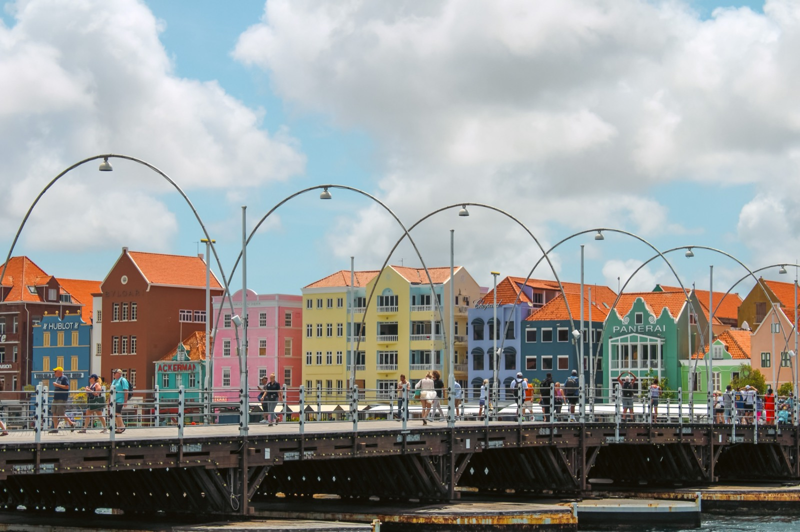
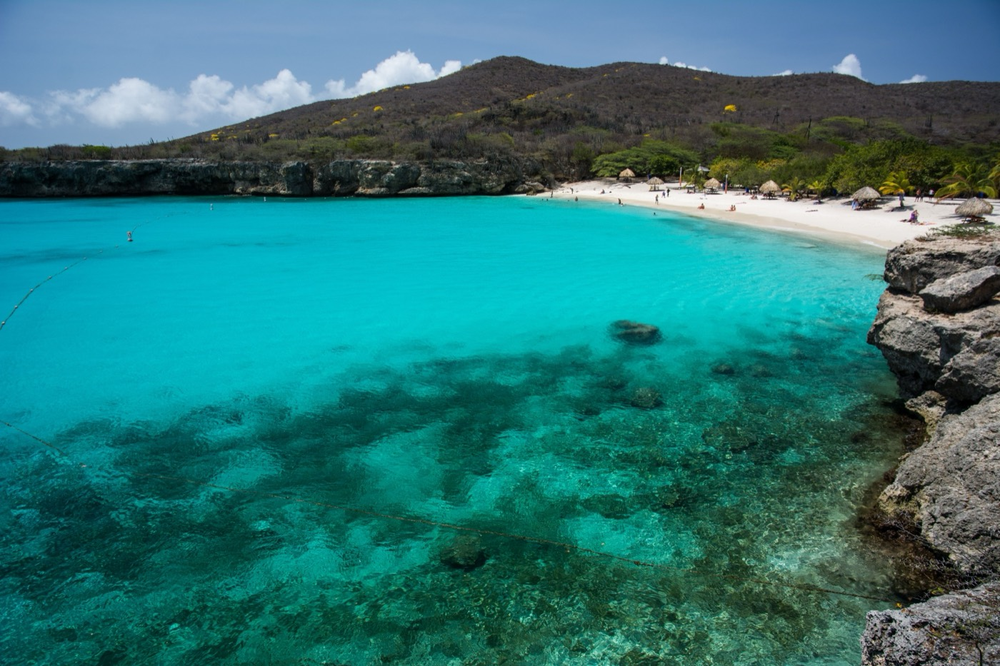

Moving to Curaçao in 2026
Outside the hurricane belt, Dutch-stable, cheaper than Aruba, and with a real path to Dutch (EU) citizenship. Here's what it costs, how residency works, and where expats settle.

Curaçao is the quiet, grown-up member of the ABC islands. A constituent country of the Kingdom of the Netherlands that blends European structure with Caribbean warmth. It sits outside the hurricane belt, it's politically stable, it's noticeably cheaper than neighboring Aruba, and (unusually for the Caribbean) it offers a genuine path to Dutch (and therefore EU) citizenship. For expats who want to settle rather than vacation, it's one of the region's most underrated options.
At a glance
- Outside the hurricane belt. Curaçao sits below the main storm track, which is the single biggest structural advantage it holds over most of the Caribbean.
- Retirees aged 50+ can pay a flat 10% on all foreign income under the penshonado ruling, including pensions, dividends, interest and capital gains. Ordinary residents face progressive rates that reach into the 40s.
- The currency changed in 2025. The Caribbean guilder (XCG) replaced the Netherlands Antillean guilder on 31 March 2025. The ANG stopped being legal tender on 30 June 2025. Both are pegged at USD 1 = 1.79.
- A real EU passport route. Five years of residency opens a path to Dutch citizenship, which almost nothing else in the Caribbean offers.
- Budget $1,800 to $3,000 a month for a comfortable single person, materially less than Aruba and far less than Cayman or the Bahamas.
Living costs, month by month
Curaçao strikes a comfortable balance. Rent and utilities are reasonable by regional standards, while imported groceries run higher because nearly everything arrives by ship. It is meaningfully cheaper than Aruba next door and in a completely different bracket from Cayman or the Bahamas.
| Household (2026) | Comfortable monthly budget |
|---|---|
| Single person | $1,400–$2,500 |
| Couple | $2,200–$3,000 |
| Family of four | $3,500–$4,800 |
Neighbourhood moves this more than anything else. Jan Thiel, Spanish Water and Pietermaai are the expensive addresses, favoured by expats and priced accordingly. Head west toward Westpunt and the same money buys considerably more space, at the cost of a longer drive to Willemstad for everything.
For local context, the minimum wage rose on 1 January 2026 to XCG 11.93 per hour, or about XCG 2,068 a month for a 40-hour week. That is roughly US$1,155 monthly, which tells you a good deal about local price levels outside the expat districts.
The currency changed in 2025
ANG is no longer legal tender
On 31 March 2025 the Curaçao and Sint Maarten monetary union introduced the Caribbean guilder (XCG), replacing the Netherlands Antillean guilder (ANG) one for one. The ANG ceased to be legal tender on 30 June 2025.
The peg did not move: USD 1 = XCG 1.79, exactly as before, so nothing about your purchasing power changed. Old ANG notes remained exchangeable at par at commercial banks for a year after the switch, and remain exchangeable at the Central Bank for 29 years.
Why it matters to you: a lot of relocation guides, price lists and property listings still quote ANG. Treat ANG and XCG figures as interchangeable at 1:1 and convert at 1.79 to the dollar.
Tax: the penshonado ruling
This is the most important section on the page and the one most guides skip. Curaçao is not a zero-tax island. Residents are taxed on worldwide income at progressive rates running from roughly 9.75% into the 40s, and you become a tax resident by spending more than 183 days a year there. On the face of it that makes Curaçao a poor choice for anyone with substantial income.
The penshonado ruling changes the answer completely.
| Ordinary resident | Penshonado status | |
|---|---|---|
| Foreign pension income | Progressive, up to the 40s | 10% flat |
| Foreign dividends and interest | Progressive | 10% flat |
| Foreign capital gains | Taxable | Exempt |
| Residence permit | 1 year, renewable for 10 before indefinite | Indefinite from the start |
The regime is codified in Articles 23B to 23E of the National Income Tax Ordinance, so it is statute rather than a discretionary ruling. Qualifying conditions:
- Age 50 or over at the time of application.
- You must apply within two months of registering in Curaçao. Miss that window and you cannot claim it later, which is the most common and most expensive mistake.
- You must not have been resident in Curaçao for five consecutive years before applying.
- Within 18 months you must own property worth at least XCG 450,000 (roughly US$251,000), or rent a designated monumental property of the same minimum value.
- You must genuinely live there. Registering on paper while living elsewhere does not qualify.
There is a second option under the same regime: rather than the 10% flat rate, you may elect to declare a fixed notional foreign income of XCG 500,000 and pay progressive rates on that. For someone with foreign income well above that level, the fixed-income election can produce the lower bill. Which one wins is arithmetic, and it is worth paying an accountant to run both.
Note also the 6% turnover tax (OB) on most goods and services, with 9% on certain categories. It is low by Caribbean standards.
US citizens still file with the IRS on worldwide income regardless of where they live. A 10% Curaçao rate does not eliminate a US liability, though foreign tax credits may offset part of it. Get cross-border advice before you move.
Residency & the path to Dutch citizenship
US, Canadian, and EU citizens can visit for 90 days visa-free. For staying, Curaçao runs an investor permit whose length scales with the investment:
- 3-year permit: ~$280,000 investment · 5-year: ~$425,000 · indefinite: ~$850,000.
- Retirees (50+): buy a property worth at least XCG 450,000, about $251,000, within 18 months. This is the same threshold that unlocks penshonado tax status, so the two go together.
- Income route: some applicants qualify by demonstrating annual pension income or savings of at least XCG 150,000, roughly $84,000. You may not work on the island under this permit.
- Paperwork: a declaration of good conduct no older than three months, an original bank declaration of sufficient means, and if claiming penshonado, a statement from a locally established accountant. The first application fee is XCG 635, about $355.
- The payoff: after five years of residency you can apply for Dutch citizenship, which is an EU passport. This is a residency route, not citizenship by investment, and it carries the usual naturalisation requirements including a civic integration exam. The Netherlands also restricts dual nationality in many cases, so check whether you would have to renounce your existing citizenship before treating the EU passport as the goal.
One structural point worth understanding. Curaçao is a constituent country of the Kingdom of the Netherlands rather than part of the EU itself, so it sits in the "overseas countries and territories" category. Dutch nationality acquired through Curaçao is nonetheless full Dutch nationality, and therefore full EU citizenship. That combination, a low-tax Caribbean island that is a legitimate on-ramp to an EU passport, is genuinely rare.
Healthcare, and the insurance gap
Care is of a good standard, but there's no universal system for newcomers, so private health insurance is essential, premiums typically run $100–$300/month.
Is Curaçao safe?
Yes, low crime and strong institutional stability are among its biggest selling points, and the hurricane-belt exemption means fewer weather disruptions and lower insurance costs than most of the Caribbean.
Choosing your neighbourhood

Willemstad (the UNESCO-listed capital) is the popular (and pricier) expat base; quieter coastal neighborhoods offer ocean-view villas and apartments at prices reasonable by Caribbean standards. Dutch is official; locals speak Papiamentu, and English and Spanish are widely used.
Sources & one conflict to flag
Verified 12 August 2026. Two items on this page are commonly out of date elsewhere: the currency (ANG was replaced by XCG on 31 March 2025) and the penshonado thresholds, which are set in XCG rather than dollars and so drift with any peg discussion.
- Residency: Immigratiedienst Curaçao, the island's immigration service, publishes the retiree permit requirements and fee schedule.
- Tax: Articles 23B to 23E of the Landsverordening Inkomstenbelasting set the penshonado regime. Confirm the current progressive brackets with the Ministry of Finance, since published sources disagree on the top rate.
- Currency: Centrale Bank van Curaçao en Sint Maarten, on the introduction of the Caribbean guilder.
- Wages: the minimum wage increase effective 1 January 2026.
One genuine conflict to flag: sources differ on Curaçao's top marginal income-tax rate, with credible figures at both 40% and 48.25%. That difference does not affect anyone on penshonado status, but it matters a great deal if you plan to work locally. Confirm it before you rely on it.
Is Curaçao right for you?
- Great fit if: you want Dutch stability and a real EU-citizenship path, hurricane-free weather, and better value than Aruba.
- Think twice if: you need a cheap entry (the investor thresholds are substantial) or a big, ready-made English-speaking expat scene.
10% on foreign income, or 0% and a house you own.
Curaçao's penshonado ruling is one of the best retiree tax positions in the Caribbean, and it asks for a $251,000 property purchase to unlock it. Panama and Costa Rica tax foreign income at zero with no property requirement at all, and the same capital builds a larger house on more land. If the tax position is what brought you here, it is worth seeing both sides of the comparison before you commit.
Frequently asked questions
How do you get residency in Curaçao?
Through an investor permit whose duration scales with the investment: roughly $280,000 for three years, $425,000 for five years, or $850,000 for indefinite residence. Retirees aged 50+ can qualify by buying a property worth about $250,000. After five years of residency you can apply for Dutch (EU) citizenship.
Is Curaçao cheaper than Aruba?
Generally yes. A single person lives comfortably on about $1,400–$2,500/month. Rent and utilities are relatively affordable; imported groceries cost more. Overall it offers strong value versus Aruba for a similar Dutch-Caribbean lifestyle.
Is Curaçao safe?
Yes, it has low crime, strong political and institutional stability, and sits outside the main hurricane belt (with Aruba and Bonaire), which also means fewer weather disruptions and lower insurance costs.
Can you get EU citizenship through Curaçao?
Indirectly. Curaçao's investor permit is a residency route, not direct citizenship-by-investment, but after five years of legal residence you can apply for Dutch citizenship: which is an EU passport. Requirements include integration criteria, so plan with an adviser.
Sources & verification
Figures in this guide were checked against primary and authoritative sources on 27 July 2026. Immigration, tax, and cost figures change, always confirm the current rules with the official body or a licensed professional before acting.
- Curaçao Immigration (Toelating & Uitzetting). Official residency-permit authority
- Global Citizen Solutions, Curaçao: corroborating investor/retiree permit thresholds
- US State Department, Curaçao. Travel advisory (Level 1)